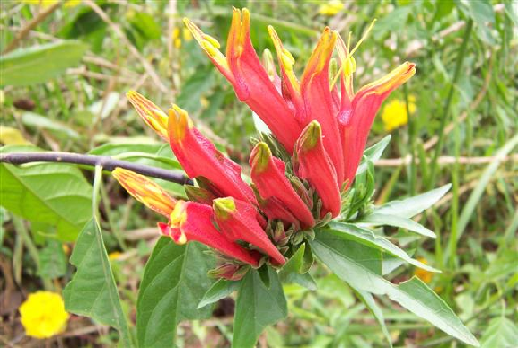

ประเภทไม้พุ่ม

กระเจี๊ยบแดง
เป็นไม้พุ่ม ความสูงของต้นประมาณ 1-2 เมตร กิ่งก้านของต้นมีสีม่วงแดง มีขนตามกิ่งและก้านรำไร ใบกระเจี๊ยบเป็นใบเดี่ยว รูปทรงไข่หรือรูปนิ้วมือ ขนาดใบกว้างกระมาณ 7-12 เซนติเมตร ยาว 8-15 เซนติเมตร ขอบใบจัก
ส่วนดอกกระเจี๊ยบมีสีเหลือง กลางดอกมีสีม่วงอมแดง ขนาดความดอกกว้างประมาณ 4-5 เซนติเมตร ดอกกระเจี๊ยบจะออกเดี่ยวหรือดอกคู่ตามซอกใบ ในดอกกระเจี๊ยบมีเกสรตัวผู้เชื่อมกันเป็นหลอด ผลเผ็นผลแห้ง แตกได้ มีกลีบเลี้ยงสีแดงฉ่ำน้ำหุ้มไว้
สรรพคุณ :
- ใบอ่อนและยอดมีรสเปรี้ยวเล็กน้อย ใช้ต้มหรือแกง กลีบเลี้ยงสีแดงและรสเปรี้ยว มีคุณค่าทางอาหาร ใช้ทำเครื่องดื่ม เช่น ชา น้ำผลไม้ ไวน์ ตลอดจนทั้งทำอาหารหวานบางจำพวก เช่น แยม เมล็ดมีน้ำมันมาก เส้นใยจากต้นใช้ทำเชือกและกระสอบ ในไต้หวันใช้เมล็ดเป็นยาแผนโบราณเพื่อเป็นยาระบาย ยาขับปัสสาวะ และยาบำรุง

พญายอ
เป็นไม้พุ่มรอเลื้อย ลำต้นและกิ่งก้านเกลี้ยงเป็นมัน สูงได้ถึง 3 เมตร ใบเดี่ยวออกเรียงตรงกันข้าม รูปขอบขนานหรือขอบขนานแกมใบหอก กว้าง 2-3 เซนติเมตร ยาว 7-9 เซนติเมตร โคนใบมน ปลายใบแหลม ก้านใบยาว 0.5 เซ็นติเมตร ดอกเป็นช่อ ออกเป็นกระจุกที่ปลายยอด กลีบดอกสีส้มแดงเชื่อมติดกันเป็นหลอดยาว ปลายแยกเป็น 2 ปาก ยาว 3-4 เซนติเมตร ไม่ติดฝัก
สรรพคุณ :
- ต้น : ใช้ถอนพิษ โดยเฉพาะพิษแมลงสัตว์กัดต่อย ตะขาบ แมลงป่อง รักษาอาการอักเสบ งูสวัด ลมพิษ แผลน้ำร้อนลวก
- ใบ : รสจืดเย็น นำมาสกัดทำทิงเจอร์และกรีเซอรีน ใช้รักษาแผลผิวหนังชนิดเริ่ม Herpes และรักษาแผลร้อนในในปาก Apthousดับพิษร้อน แก้แผลน้ำร้อนลวก
- ราก : รสจืดเย็น ปรุงเป็นยาขับปัสสาวะ ขับประจำเดือน แก้ปวดเมื่อยบั้นเอว ฝนทาแก้พิษงู ตะขาบ แมงป่อง
- ทั้งต้น : รสจืดเย็น แก้พิษงู พิษแมลงสัตว์กัดต่อย แก้เริม แก้บิด ถอนพิษไข้ ไฟลามทุ่ง โขลกกับดินประสิวเล็กน้อยผสมเหล้าขาวคั้นเอาน้ำดื่มและเอากากพอก